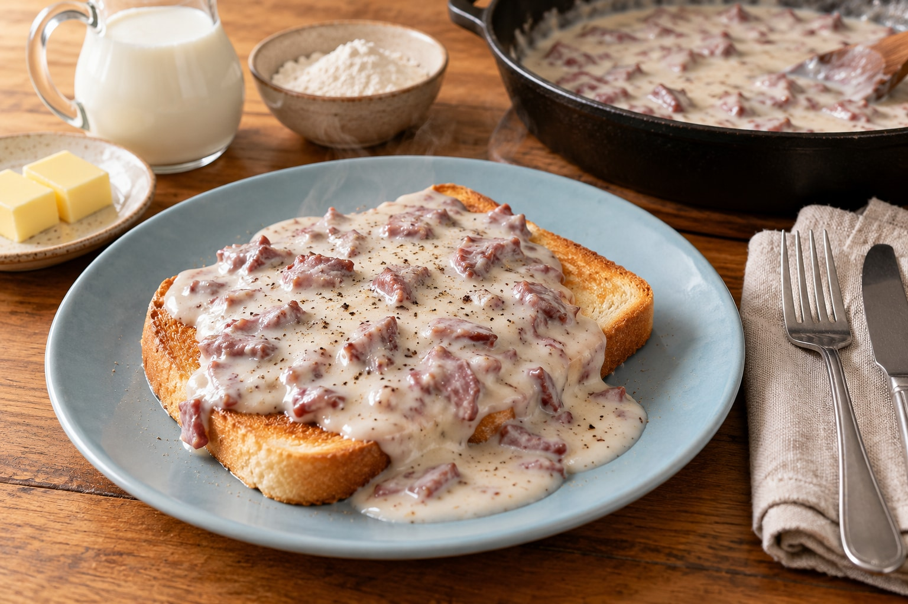

Chipped Beef on Toast
Jump to recipe ↓
The Story
Known affectionately (or not) by military veterans as "S.O.S." ("S**t on a Shingle"), this dish was a staple for soldiers and became a common meal in households during the Depression. Why? Because the main ingredient—dried, salted beef—was a perfect "store of value."
It was protein that was shelf-stable, didn't require refrigeration, and could last through any "winter." The recipe itself is an act of reconstitution, bringing this preserved asset back to life with a simple cream sauce (another roux) and serving it over the most available carbohydrate: bread. It's a lesson in the economic power of preservation.
The Recipe
Ingredients
- 8 oz. dried beef, "chipped" or torn into small pieces
- 2 Tbsp. butter or oil
- 4 Tbsp. flour
- 4 cups milk (whole milk is best)
- Salt and pepper to taste
- 8 slices of bread, toasted (the "shingle")
Instructions
- (Optional step): If the dried beef is very salty, you can briefly soak it in hot water for a few minutes, then drain.
- In a large pan over medium heat, melt the butter. Add the chipped beef and cook for 3-4 minutes, until the meat softens and frizzes at the edges.
- Sprinkle the flour over the beef and stir constantly for 1-2 minutes until the flour is cooked (it will look pasty).
- Slowly pour in the milk, whisking constantly to prevent lumps.
- Bring the mixture to a low boil, stirring as it thickens (this should take 3-5 minutes).
- Reduce the heat, add salt and pepper to taste (be careful, the beef is already salty).
- Serve generously over the slices of toasted bread.
The Economic Lesson
Principle: Resilient systems are built on preserved "stores of value."
The dried beef is the key. It is an asset that holds its value (nutritional value, in this case) over time. It's not subject to inflation or "rot," unlike fresh meat, which is a depreciating asset that requires constant energy (refrigeration) to maintain.
This is a direct parallel to sound economics. A family, or a society, that builds its savings on "fresh meat" (like inflationary paper currency that rots in value) will be wiped out in a crisis. A resilient society builds on "dried beef" (sound money, real assets, tangible skills) that can endure any "winter." Human dignity is preserved when you have the freedom to store the value of your labor in a form that cannot be easily debased or taken by a centralized system.
Learn more at The Trading Post →